转载请声明出处：http://blog.csdn.net/zhongkelee/article/details/44064401
一、PCA简介¶
1. 相关背景¶
上完陈恩红老师的《机器学习与知识发现》和季海波老师的《矩阵代数》两门课之后，颇有体会。最近在做主成分分析和奇异值分解方面的项目，所以记录一下心得体会。
在许多领域的研究与应用中，往往需要对反映事物的多个变量进行大量的观测，收集大量数据以便进行分析寻找规律。多变量大样本无疑会为研究和应用提供了丰富的信息，但也在一定程度上增加了数据采集的工作量，更重要的是在多数情况下，许多变量之间可能存在相关性，从而增加了问题分析的复杂性，同时对分析带来不便。如果分别对每个指标进行分析，分析往往是孤立的，而不是综合的。盲目减少指标会损失很多信息，容易产生错误的结论。
因此需要找到一个合理的方法，在减少需要分析的指标同时，尽量减少原指标包含信息的损失，以达到对所收集数据进行全面分析的目的。由于各变量间存在一定的相关关系，因此有可能用较少的综合指标分别综合存在于各变量中的各类信息。主成分分析与因子分析就属于这类降维的方法。
2. 问题描述¶
下表1是某些学生的语文、数学、物理、化学成绩统计：
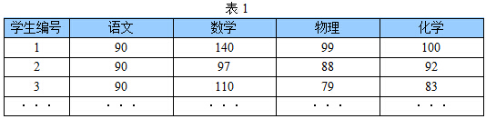
首先，假设这些科目成绩不相关，也就是说某一科目考多少分与其他科目没有关系。那么一眼就能看出来，数学、物理、化学这三门课的成绩构成了这组数据的主成分（很显然，数学作为第一主成分，因为数学成绩拉的最开）。为什么一眼能看出来？因为坐标轴选对了！下面再看一组学生的数学、物理、化学、语文、历史、英语成绩统计，见表2，还能不能一眼看出来：

数据太多了，以至于看起来有些凌乱！也就是说，无法直接看出这组数据的主成分，因为在坐标系下这组数据分布的很散乱。究其原因，是因为无法拨开遮住肉眼的迷雾~如果把这些数据在相应的空间中表示出来，也许你就能换一个观察角度找出主成分。如下图1所示：
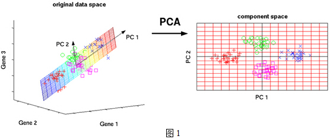
但是，对于更高维的数据，能想象其分布吗？就算能描述分布，如何精确地找到这些主成分的轴？如何衡量你提取的主成分到底占了整个数据的多少信息？所以，我们就要用到主成分分析的处理方法。
3. 数据降维¶
为了说明什么是数据的主成分，先从数据降维说起。数据降维是怎么回事儿？假设三维空间中有一系列点，这些点分布在一个过原点的斜面上，如果你用自然坐标系x,y,z这三个轴来表示这组数据的话，需要使用三个维度，而事实上，这些点的分布仅仅是在一个二维的平面上，那么，问题出在哪里？如果你再仔细想想，能不能把x,y,z坐标系旋转一下，使数据所在平面与x,y平面重合？这就对了！如果把旋转后的坐标系记为x',y',z'，那么这组数据的表示只用x'和y'两个维度表示即可！当然了，如果想恢复原来的表示方式，那就得把这两个坐标之间的变换矩阵存下来。这样就能把数据维度降下来了！但是，我们要看到这个过程的本质，如果把这些数据按行或者按列排成一个矩阵，那么这个矩阵的秩就是2！这些数据之间是有相关性的，这些数据构成的过原点的向量的最大线性无关组包含2个向量，这就是为什么一开始就假设平面过原点的原因！那么如果平面不过原点呢？这就是数据中心化的缘故！将坐标原点平移到数据中心，这样原本不相关的数据在这个新坐标系中就有相关性了！有趣的是，三点一定共面，也就是说三维空间中任意三点中心化后都是线性相关的，一般来讲n维空间中的n个点一定能在一个n-1维子空间中分析！
上一段文字中，认为把数据降维后并没有丢弃任何东西，因为这些数据在平面以外的第三个维度的分量都为0。现在，假设这些数据在z'轴有一个很小的抖动，那么我们仍然用上述的二维表示这些数据，理由是我们可以认为这两个轴的信息是数据的主成分，而这些信息对于我们的分析已经足够了，z'轴上的抖动很有可能是噪声，也就是说本来这组数据是有相关性的，噪声的引入，导致了数据不完全相关，但是，这些数据在z'轴上的分布与原点构成的夹角非常小，也就是说在z'轴上有很大的相关性，综合这些考虑，就可以认为数据在x',y' 轴上的投影构成了数据的主成分！
课堂上老师谈到的特征选择的问题，其实就是要剔除的特征主要是和类标签无关的特征。而这里的特征很多是和类标签有关的，但里面存在噪声或者冗余。在这种情况下，需要一种特征降维的方法来减少特征数，减少噪音和冗余，减少过度拟合的可能性。
PCA的思想是将n维特征映射到k维上（k\<n），这k维是全新的正交特征。这k维特征称为主成分，是重新构造出来的k维特征，而不是简单地从n维特征中去除其余n-k维特征。
二、PCA实例¶
现在假设有一组数据如下：
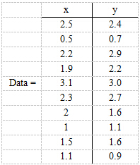
行代表了样例，列代表特征，这里有10个样例，每个样例两个特征。可以这样认为，有10篇文档，x是10篇文档中“learn”出现的TF-IDF，y是10篇文档中“study”出现的TF-IDF。 第一步，分别求x和y的平均值，然后对于所有的样例，都减去对应的均值。这里x的均值是1.81，y的均值是1.91，那么一个样例减去均值后即为（0.69,0.49），得到

第二步，求特征协方差矩阵，如果数据是3维，那么协方差矩阵是
这里只有x和y，求解得
对角线上分别是x和y的方差，非对角线上是协方差。协方差是衡量两个变量同时变化的变化程度。协方差大于0表示x和y若一个增，另一个也增；小于0表示一个增，一个减。如果ｘ和ｙ是统计独立的，那么二者之间的协方差就是０；但是协方差是０，并不能说明ｘ和ｙ是独立的。协方差绝对值越大，两者对彼此的影响越大，反之越小。协方差是没有单位的量，因此，如果同样的两个变量所采用的量纲发生变化，它们的协方差也会产生树枝上的变化。
第三步，求协方差的特征值和特征向量，得到
上面是两个特征值，下面是对应的特征向量，特征值0.0491对应特征向量为 (-0.7352, 0.6779)^T ，这里的特征向量都归一化为单位向量。
{kind=link}
第四步，将特征值按照从大到小的顺序排序，选择其中最大的k个，然后将其对应的k个特征向量分别作为列向量组成特征向量矩阵。
这里特征值只有两个，我们选择其中最大的那个，这里是1.2840 ，对应的特征向量是(-0.6779, -0.7352)^T。
第五步，将样本点投影到选取的特征向量上。假设样例数为m，特征数为n，减去均值后的样本矩阵为DataAdjust(m*n)，协方差矩阵是n*n，选取的k个特征向量组成的矩阵为EigenVectors(n*k)。那么投影后的数据FinalData为
FinalData(10*1) = DataAdjust(10*2矩阵) x 特征向量(-0.677873399, -0.735178656)T
得到的结果是
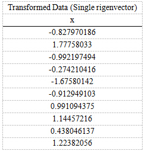
这样，就将原始样例的n维特征变成了k维，这k维就是原始特征在k维上的投影。
上面的数据可以认为是learn和study特征融合为一个新的特征叫做LS特征，该特征基本上代表了这两个特征。上述过程如下图2描述：

正号表示预处理后的样本点，斜着的两条线就分别是正交的特征向量（由于协方差矩阵是对称的，因此其特征向量正交），最后一步的矩阵乘法就是将原始样本点分别往特征向量对应的轴上做投影。
整个PCA过程貌似及其简单，就是求协方差的特征值和特征向量，然后做数据转换。但是有没有觉得很神奇，为什么求协方差的特征向量就是最理想的k维向量？其背后隐藏的意义是什么？整个PCA的意义是什么？
三、PCA推导¶
先看下面这幅图：
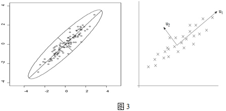
在第一部分中，我们举了一个学生成绩的例子，里面的数据点是六维的，即每个观测值是6维空间中的一个点。我们希望将6维空间用低维空间表示。
先假定只有二维，即只有两个变量，它们由横坐标和纵坐标所代表；因此每个观测值都有相应于这两个坐标轴的两个坐标值；如果这些数据形成一个椭圆形状的点阵，那么这个椭圆有一个长轴和一个短轴。在短轴方向上，数据变化很少；在极端的情况，短轴如果退化成一点，那只有在长轴的方向才能够解释这些点的变化了；这样，由二维到一维的降维就自然完成了。
上图中，u1就是主成分方向，然后在二维空间中取和u1方向正交的方向，就是u2的方向。则n个数据在u1轴的离散程度最大（方差最大），数据在u1上的投影代表了原始数据的绝大部分信息，即使不考虑u2，信息损失也不多。而且，u1、u2不相关。只考虑u1时，二维降为一维。
椭圆的长短轴相差得越大，降维也越有道理。
1. 最大方差理论¶
在信号处理中认为信号具有较大的方差，噪声有较小的方差，信噪比就是信号与噪声的方差比，越大越好。如前面的图，样本在u1上的投影方差较大，在u2上的投影方差较小，那么可认为u2上的投影是由噪声引起的。
因此我们认为，最好的k维特征是将n维样本点转换为k维后，每一维上的样本方差都很大。
比如我们将下图中的5个点投影到某一维上，这里用一条过原点的直线表示（数据已经中心化）：
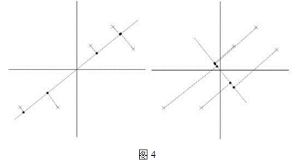
假设我们选择两条不同的直线做投影，那么左右两条中哪个好呢？根据我们之前的方差最大化理论，左边的好，因为投影后的样本点之间方差最大（也可以说是投影的绝对值之和最大）。
计算投影的方法见下图5：
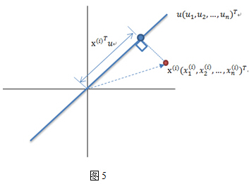
图中，红色点表示样例，蓝色点表示在u上的投影，u是直线的斜率也是直线的方向向量，而且是单位向量。蓝色点是在u上的投影点，离原点的距离是\<x,u>（即xTu或者uTx）。
{kind=link}
{kind=link}
{kind=link}
{kind=link}
{kind=link}
2. 最小二乘法¶
我们使用最小二乘法来确定各个主轴（主成分）的方向。 对给定的一组数据（下面的阐述中，向量一般均指列向量）： \{\vec{\boldsymbol z_1},\vec{\boldsymbol z_2},...,\vec{\boldsymbol z_n} \} 其数据中心位于: $$ \overrightarrow{\boldsymbol{\mu}} = \frac{1}{n}\sum^n_{i=1}\vec{\boldsymbol z_i}$$ 数据中心化（将坐标原点移到样本点的中心点）： \{\vec{\boldsymbol x_1},\vec{\boldsymbol x_2},...,\vec{\boldsymbol x_n} \}=\{\vec{\boldsymbol z_1}-\overrightarrow{\boldsymbol{\mu}},\vec{\boldsymbol z_2}-\overrightarrow{\boldsymbol{\mu}},...,\vec{\boldsymbol z_n}-\overrightarrow{\boldsymbol{\mu}} \} 中心化后的数据在第一主轴u1方向上分布散的最开，也就是说在u1方向上的投影的绝对值之和最大（也可以说方差最大），计算投影的方法上面已经阐述，就是将x与u1做内积，由于只需要求u1的方向，所以设u1也是单位向量。
在这里，也就是最大化下式： $$ \frac{1}{n}\sum^n_{i=1}\vec{\boldsymbol x_i}\vec{\boldsymbol{u_1}} $$ 由矩阵代数相关知识可知，可以对绝对值符号项进行平方处理，比较方便。所以进而就是最大化下式： $$ \frac{1}{n}\sum^n_{i=1} \left| \vec{\boldsymbol x_i} \cdot \vec{\boldsymbol{u_1}} \right|^2 = \frac{1}{n}\sum^n_{i=1} \left( \vec{\boldsymbol x_i} \cdot \vec{\boldsymbol{u_1}} \right)^2 $$
两个向量做内积，可以转化成矩阵乘法： \vec{\boldsymbol x_i} \cdot \vec{\boldsymbol{u_1}} ={\boldsymbol x_i}^T {\boldsymbol{u_1}}
所以目标函数可以表示为： $$\frac{1}{n}\sum^n_{i=1} \left( {\boldsymbol x_i}^T {\boldsymbol{u_1}} \right)^2 $$ \begin{pmatrix} \\ \\ \\ \\ \\ \\ \\ \\ \\ \\ \\ \\ \end{pmatrix}
括号里面就是矩阵乘法表示向量内积，由于列向量转置以后是行向量，行向量乘以列向量得到一个数，一个数的转置还是其本身，所以又可以将目标函数化为： \frac{1}{n}\sum^n_{i=1} \left( {\boldsymbol x_i}^T {\boldsymbol{u_1}} \right)^2 =\frac{1}{n}\sum^n_{i=1} \left( {\boldsymbol x_i}^T {\boldsymbol{u_1}} \right)^T \left( {\boldsymbol x_i}^T {\boldsymbol{u_1}} \right) \\=\frac{1}{n}\sum^n_{i=1} {\boldsymbol{u_1}}^T {\boldsymbol x_i} {\boldsymbol x_i}^T {\boldsymbol{u_1}} \\=\frac{1}{n}{\boldsymbol{u_1}}^T \left( \sum^n_{i=1} {\boldsymbol x_i} {\boldsymbol x_i}^T \right) {\boldsymbol{u_1}} \\=\frac{1}{n}{\boldsymbol{u_1}}^T XX^T {\boldsymbol{u_1}}
其中的{\boldsymbol{u_1}}^T XX^T {\boldsymbol{u_1}}就是一个二次型， 我们假设 XX^T 的某一特征值为\lambda，对应的特征向量为$\xi $，有 (XX^T)^T=XX^T XX^T\xi=\lambda\xi (XX^T\xi)^T\xi=(\lambda\xi)^T\xi \xi^TXX^T\xi=\lambda\xi^T\xi \xi^TXX^T\xi = (X^T\xi)^T(X^T\xi) =\lVert X^T\xi\rVert^2 = \lambda\xi^T\xi = \lambda\lVert\xi\rVert^2 \ge 0 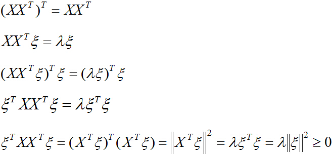
所以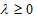，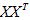是半正定的对称矩阵，即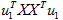是半正定阵的二次型，由矩阵代数知识得出，目标函数存在最大值！
下面我们求解最大值、取得最大值时u1的方向这两个问题。
先解决第一个问题，对于向量x的二范数平方为:
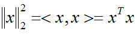
同样，目标函数也可以表示成映射后的向量的二范数平方：
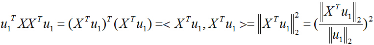
把二次型化成一个范数的形式，由于u1取单位向量，最大化目标函数的基本问题也就转化为：对一个矩阵，它对一个向量做变换，变换前后的向量的模长伸缩尺度如何才能最大？我们有矩阵代数中的定理知，向量经矩阵映射前后的向量长度之比的最大值就是这个矩阵的最大奇异值，即：
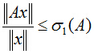
式中，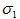是矩阵A的最大奇异值（亦是矩阵A的二范数），它等于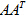（或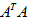）的最大特征值开平方。
针对本问题来说，是半正定对称阵，也就意味着它的特征值都大于等于0，且不同特征值对应的特征向量是正交的，构成所在空间的一组单位正交基。
再解决第二个问题，对一般情况，设对称阵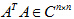的n个特征值分别为：
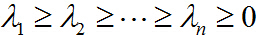
相应的单位特征向量为：
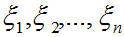
任取一个向量x，用特征向量构成的空间中的这组基表示为：
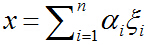
则：
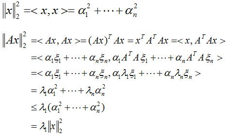
所以：
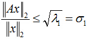
针对第二个问题，我们取上式中的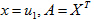，目标函数取得最大值，也就是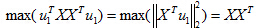的最大特征值时，对应的特征向量的方向，就是第一主成分u1的方向！（第二主成分的方向为的第二大特征值对应的特征向量的方向，以此类推）。
证明完毕。
主成分所占整个信息的百分比可用下式计算：
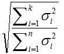
式中分母为所有奇异值平方和，分子为所选取的前k大奇异值平方和。
有些研究工作表明，所选的主轴总长度占所有主轴长度之和的大约85% 即可，其实，这只是一个大体的说法，具体选多少个，要看实际情况而定。
3.意义¶
PCA将n个特征降维到k个，可以用来进行数据压缩，例如100维的向量最后可以用10维来表示，那么压缩率为90%。同样图像处理领域的KL变换使用PCA做图像压缩，人脸检测和匹配。比如如下摘自另一篇博客上的Matlab实验结果：
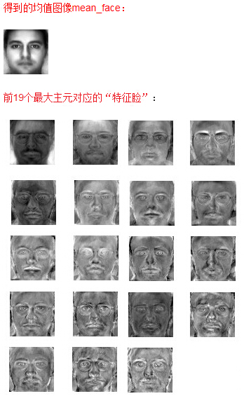
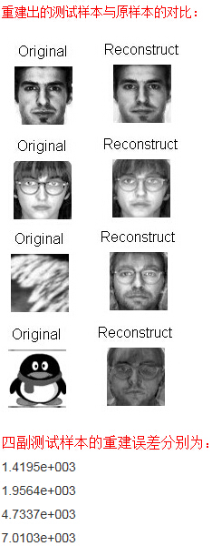
可见测试样本为人脸的样本的重建误差显然小于非人脸的重建误差。
另外PCA还可以联系奇异值分解（SVD），来用于预测矩阵中缺失的元素，可以应用到评分预测等实际项目中。详见后续SVD的博客。
有问题或者想法可以和我交流：lichunchun4.0@gmail.com
转载请声明出处：http://blog.csdn.net/zhongkelee/article/details/44064401